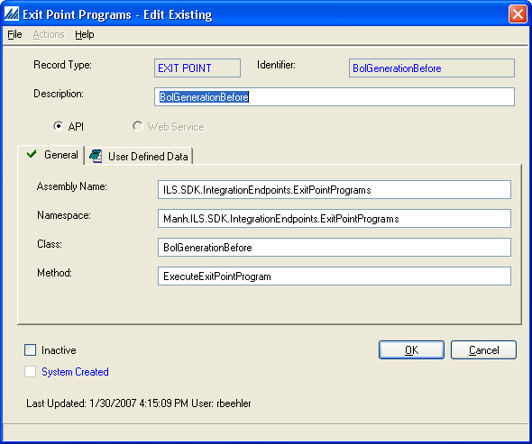

API Integration Endpoints are written in any .NET language and are invoked in the same process as the consuming Manhattan SCALE logic. Except where noted, you must configure the assembly's name, the namespace, the class name, and the entry method of the endpoint from the appropriate Integration Endpoint configuration (e.g. the Exit Point Program config). At runtime, the application loads the assembly from the GAC, creates an instance of the configured class, and uses reflection to invoke the endpoint's entry method.
Here is an example of an Exit Point Program API configuration.

API style Integration Endpoints can throw an exception derived from Manh.ILS.General.IntegrationEndpointException of the WMW.General assembly. These exceptions can be used to:
- Return validation errors via IntegrationEndpointException.Message.
- Wrap other caught exceptions via the IntegrationEndpointException.InnerException to prevent an unexpected abort in the business process.
Note that the action taken once the IntegrationEndpointException is caught entirely depends on the business process, so please consult the each specific Integration Endpoint’s documentation for details.